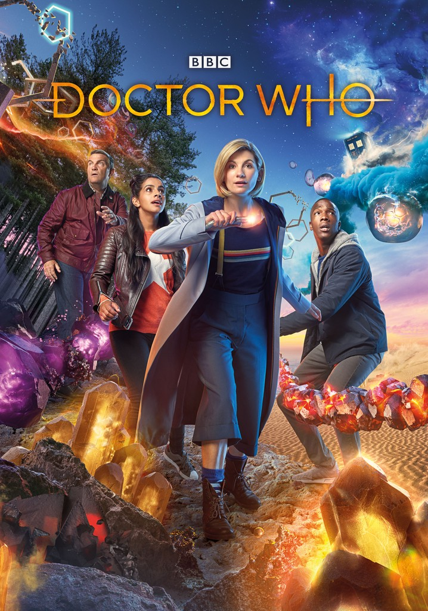
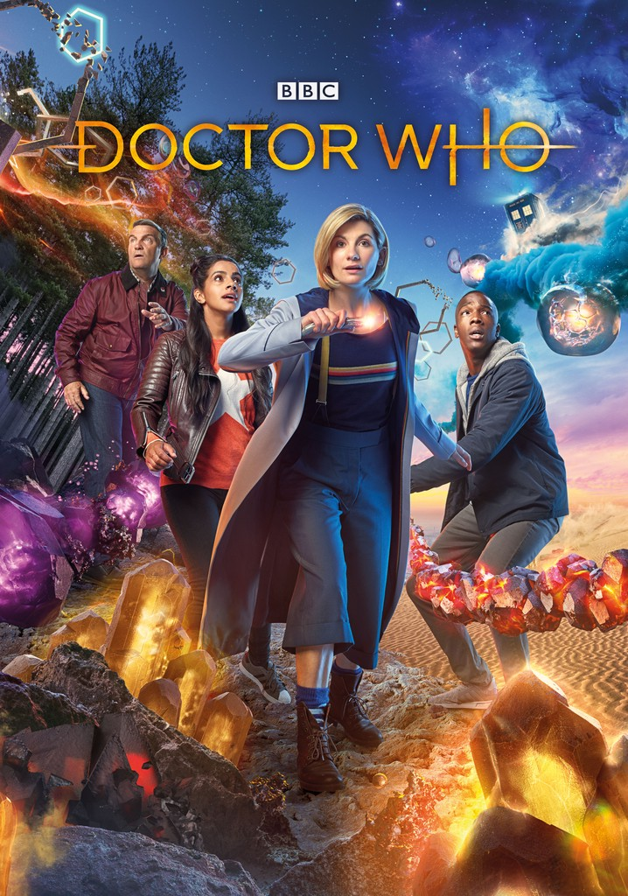

Pán času
 Doctor Who
Doctor Who
Obsah filmu
Kultovní seriál Velké Británie z 60. let je zpět a s ním i Doktor v nových regeneracích. Opět se prostřednictvím své časoprostorové Tardis (s podobou policejní budky) i společníků vydává Doktor na úžasná dobrodružství napříč prostorem a časem celého vesmíru a snaží se vyřešit nejednu zapeklitou záhadu, jež mnohdy způsobí nemalé problémy. Zas a znova se setkává s mimozemšťany různorodých civilizací, kteří ne vždy jsou vůči němu přátelští. Ať už jsou to Dálekové (jeho odvěcí nepřátelé), Sontarani, či jiní. Má tak co dělat, aby sám vyvázl z malérů a zvládl situaci, aniž by přitom kdokoliv přišel o život, což se bohužel ne vždy podaří.
Informácie o filme
Sci-Fi / Fantasy / Dobrodružný / Drama Velká Británie, (2005-2023), 129 h 24 min (Minutáž: 42-88 min)
Tvůrci: Chris Chibnall, Russell T. Davies
Režie: James Hawes
Scénář: Russell T. Davies
Kamera: Ernest Vincze
Hudba: Murray Gold, Segun Akinola, Högni Egilsson
Série(14) / Epizody(161)
Série 1 (2005) 13 epizod
Série 2 (2006) 13 epizod
Série 3 (2007) 13 epizod
Série 4 (2008) 13 epizod
Série 5 (2010) 13 epizod
Série 6 (2011) 13 epizod
Série 7 (2012) 14 epizod
Série 8 (2014) 12 epizod
Série 9 (2015) 13 epizod
Série 10 (2017) 12 epizod
Série 11 (2018) 11 epizod
Série 12 (2020) 11 epizod
Série 13 (2021) 9 epizod
Série 14 (2023) 1 epizod
Herci
- Peter Capaldi
- Matt Smith
- Billie Piper
 

Zajímavosti
- Peter Capaldi se dozvěděl, že byl vybrán coby představitel dvanáctého doktora během natáčení seriálu Tři mušketýři (od r. 2014) v Praze. (Zdroj: Doctor Who (Live) - The Next Doctor 2013) (Roby)
- V dôsledku viacerých paradoxov cestovania v čase, ktoré zažije, je Clara Oswaldová (Jenna Coleman) prvým spoločníkom Doktora, ktorému sa podarí získať fyzicky identických dvojníkov v rôznych obdobiach dejín (na Zemi aj iných planétach), stretnúť všetky Doktorove minulé inkarnácie (podoby) a nechtiac na chvíľu navštíviť Doktora v časoch jeho detstva na Gallifrey. Zaujímavý je pritom fakt, že sa Clare podarí stretnúť jednotlivé inkarnácie Doktora nielen prostredníctvom svojich dvojníčok, ale aj osobne.
- Alex Kingston, představitelka River Song, natočila své scény pro díl "Dobrý muž jde do války" za pouhé dva dny.